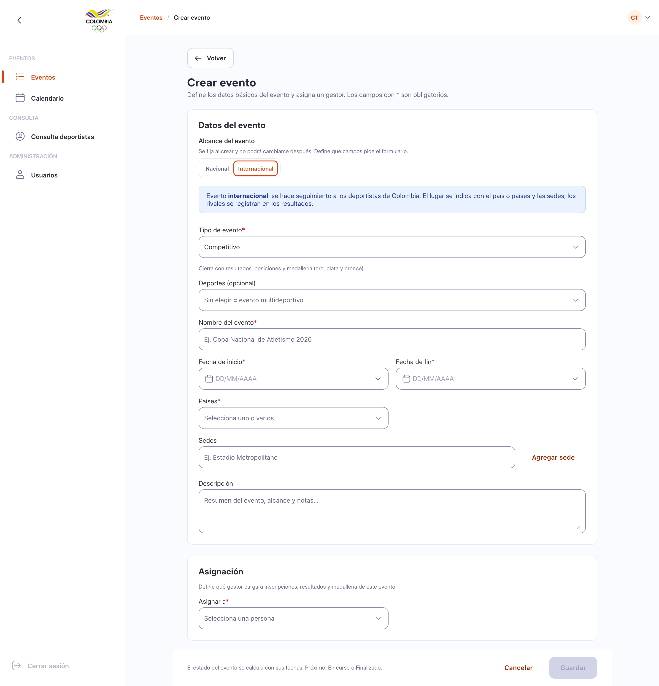
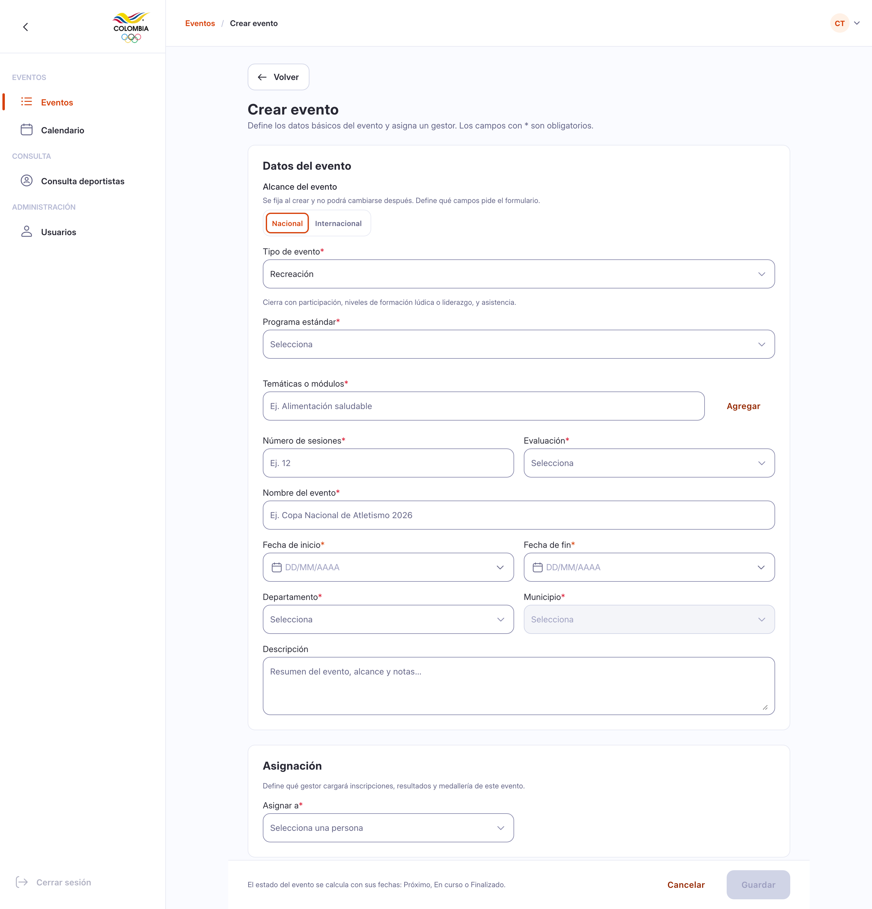
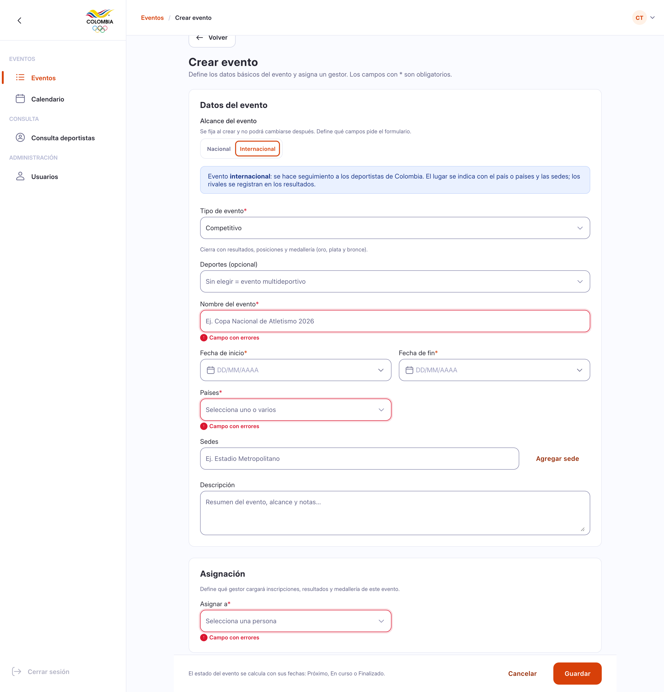
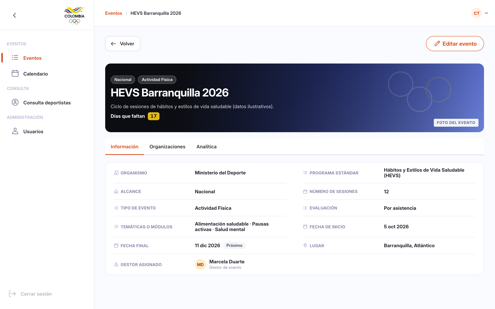
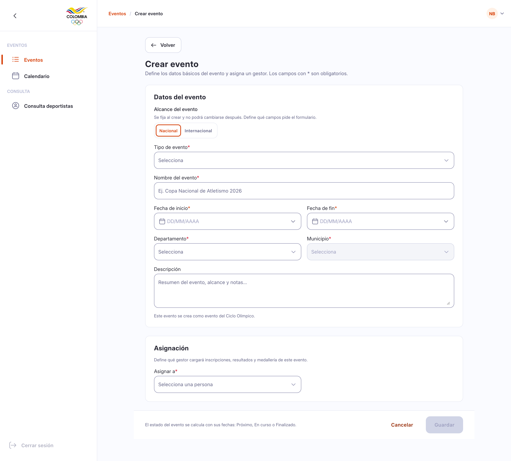
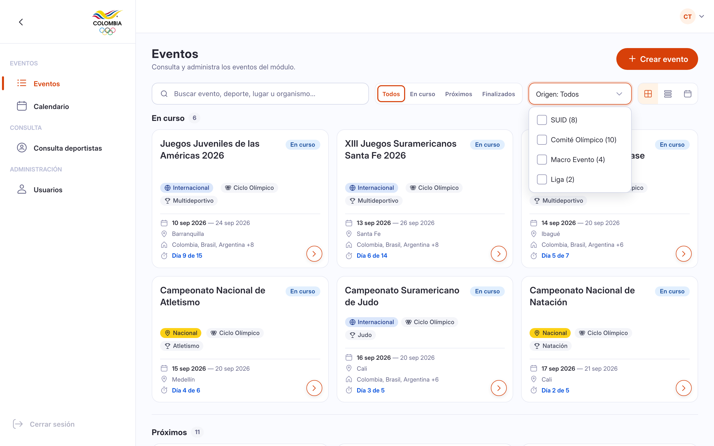
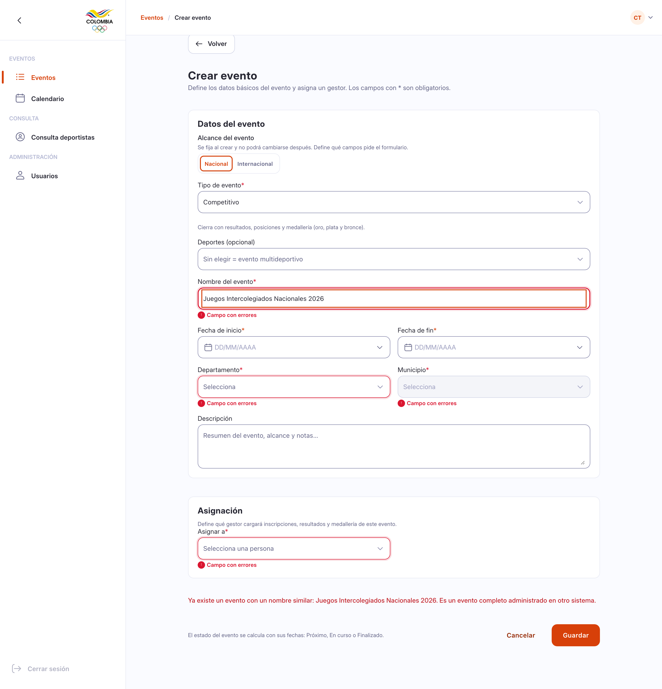
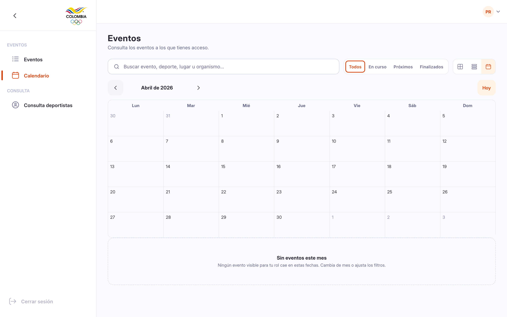
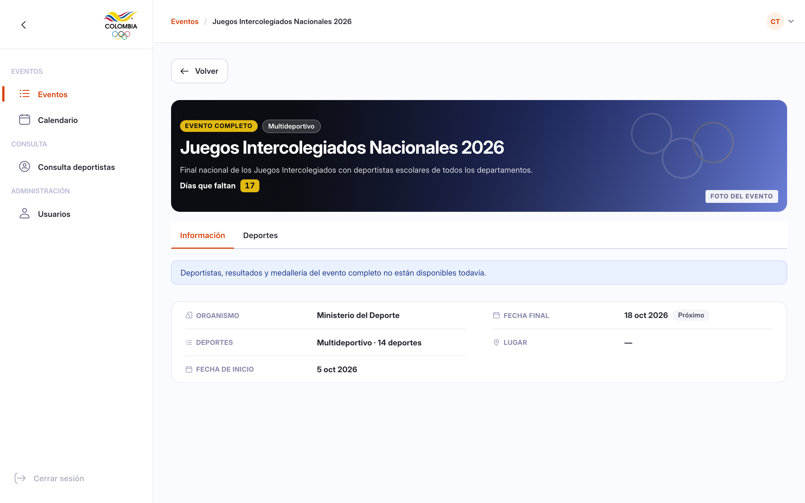
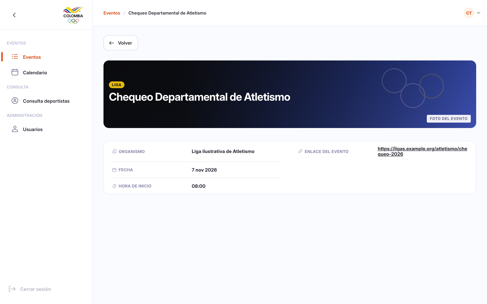

Naowee · Módulo Eventos · Versión 5
Cómo SUID crea, edita y consulta eventos
Qué eventos puede crear cada persona, qué ve en cada uno y qué falta confirmar con el equipo de backend. 30 de octubre de 2026 · Naowee
Punto de partida
Todos usan el mismo sistema; cada rol ve y hace cosas distintas
- Cada evento tiene un tipo guardado en el sistema (
event_type): sencillo, completo o de Liga. - Evento sencillo (LITE): lo crea SUID o el Comité Olímpico. Evento completo (FULL): vive en otro sistema. Liga (ULTRA_LITE): lo crea una liga.
- SUID puede editar un evento sencillo con el rol correcto. Un evento completo nunca se edita aquí.
- El sistema solo limita lo que ve el Comité Olímpico: únicamente sus eventos.
De dónde sale esto
Revisión de Javier Mercado, leída del código de staging
Todavía no se comprobó en producción.
Qué crea SUID
SUID crea cinco tipos de evento, y cada uno cierra distinto
| Tipo | Ejemplos | Qué se pide además | Cómo termina |
|---|---|---|---|
| Competitivo | Copa Nacional de Voleibol | Deportes (si queda vacío, es multideportivo) | Resultados y medallería |
| Actividad Física | HEVS Barranquilla 2026, Vías Activas y Saludables, Fuertemente Activos | Temas, sesiones y forma de evaluar | Asistencia o aprobación |
| Deporte Escolar y Formativo | JDEC Tolima 2026, Escuelas Deportivas para Todos | Modalidad: competitiva o formativa | Resultados, o asistencia |
| Deporte Social Comunitario | Juegos Comunales, Encuentros de Deporte Social, Programas Inclusivos | Modalidad: competitiva o formativa | Resultados, o participación |
| Recreación | Campamento Juvenil Eje Cafetero, Nuevo Comienzo | Temas, sesiones y forma de evaluar | Participación y asistencia |
Fuente: documento PR-03 §2 y RN-01. Este tipo es distinto del origen del evento (SUID, Comité, completo, Liga). «Juegos Intercolegiados Nacionales», que el PR-03 §2 lista como tipo, es un error del documento: es un evento completo de JIN, no algo que SUID cree. Por confirmar Javi aún debe confirmar que event_type tiene solo tres valores; el backend tampoco confirma que soporte estos cinco tipos.
Crear un evento
Se elige el tipo primero y el formulario pide solo lo que ese tipo necesita


AlcanceNacional o Internacional se elige al crear y no se cambia después. Todo lo que crea un rol SUID es evento SUID. Decisión
Parámetros y validaciones
En un evento internacional, los países son obligatorios
| Caso | Qué es obligatorio |
|---|---|
| Evento internacional | Uno o más países. Se ven en la lista y en el detalle. |
| Evento nacional | Departamento y municipio |
| Actividad Física y Recreación | Programa, temas, sesiones (un número mayor a 0) y evaluación |
| Escolar y Social | Programa y modalidad |
Siempre: nombre, fechas (el fin va después del inicio) y gestor. El nombre no puede repetirse en ningún tipo. Los errores aparecen solo al intentar guardar. Decisión

Detalle de un evento SUID
Un evento no competitivo muestra programa, sesiones y evaluación

Datos ilustrativos. El tipo y sus datos son de diseño: el backend de eventos sencillos no los soporta confirmado. Por confirmar
Detalle de un evento SUID
Un competitivo SUID se edita con el botón «Editar evento»
Qué se editaDatos, fechas, lugar, gestor y lo propio del tipo. El alcance no cambia. Decisión
Quién puedeEn el backend, editar es el permiso event:update del rol EVENTS_LITE_ADMIN (Admin Naowee). Javi
EstadoSe calcula con las fechas: Próximo, En curso o Finalizado.
Qué ve cada rol en un evento
Las pestañas cambian según el tipo de evento y el rol
| Evento | Pestañas con un rol SUID |
|---|---|
| Competitivo SUID | Información · Cargas · Deportes · Organizaciones · Analítica |
| No competitivo SUID | Información · Organizaciones · Analítica |
| Del ciclo olímpico (solo consulta) | Información · Deportes · Organizaciones · Analítica |
| Evento completo | Información · Deportes |
| Liga | Información |
Solo para roles del ComitéMetodólogos, Calendario y resultados, Medallería y Boletines. Un rol SUID no los ve, ni siquiera en eventos SUID. Decisión
Por quéEn un evento completo, el backend solo entrega Información y Deportes; lo demás responde error 501. Javi
Quién crea y quién edita
Cada rol crea y edita solo lo suyo; lo ajeno solo se consulta
| Rol | Crea y edita | Solo consulta |
|---|---|---|
| Rol SUID (Admin Naowee) | Eventos SUID. En los eventos del ciclo no se edita. | Ciclo olímpico, completos y Liga |
| Rol del Comité con permiso de crear Propuesto | Eventos del ciclo olímpico, marcados solos | SUID, completos y Liga |
| Cualquier rol | Nadie crea ni edita eventos completos ni de Liga | Completos y Liga |
De dónde saleEs decisión de diseño de Jorge. Decisión Pero hoy, en el código real, «ciclo olímpico» es un interruptor del mismo formulario que usan Admin Naowee y el superusuario (SUV2‑1741). Los roles del Comité no pueden crear eventos.
Falta confirmar con JaviLa regla necesita un «Administrador del Comité» que hoy no existe en el backend. Por confirmar
La regla en pantalla
Con rol SUID, un evento del ciclo no se edita; el rol del Comité propuesto sí crea

Lista y nombre único
La lista se filtra por origen, y el nombre no se repite en ningún tipo


Al crear un evento, la lista salta hasta él y lo resalta unos segundos. El backend compara los nombres sin tildes ni mayúsculas y responde 409 si ya existe Javi. No hay botón «Agregar»: no existe modelo de vínculo en el backend.
Calendario
Un mes sin eventos muestra un aviso, no una pantalla vacía

Mensaje«Sin eventos este mes. Ningún evento visible para tu rol cae en estas fechas. Cambia de mes o ajusta los filtros.»
Por qué se ve vacíoEl Comité solo ve eventos del ciclo olímpico; fuera de ellos el backend responde 404. Javi
Contexto · Lo que SUID solo consulta
Eventos del Comité, completos y de Liga: SUID los ve, pero no los crea ni los edita
Evento sencillo con la etiqueta «Ciclo Olímpico». El rol del Comité lo ve completo; un rol SUID, simplificado y sin edición.

Se administra en otro sistema; editarlo da error 501. Si es del ciclo, lleva dos etiquetas. Por confirmar

Lo crea otra organización (ULTRA_LITE). Sin estado ni pestañas: solo fechas, hora y enlace.
Resultado de la auditoría de backend
Qué confirmó Javi, qué corrigió el diseño y qué sigue abierto
| Punto de la auditoría | Efecto en el diseño | Estado |
|---|---|---|
El tipo sale de event_type; vacío cuenta como completo | Se derivan los 4 orígenes | Confirmado |
Que event_type tenga solo 3 valores | Los tipos y orígenes dependen de esto | Por confirmar (Javi) |
Marcar ciclo: Admin Naowee o EVENTS_LITE_ADMIN, en el mismo formulario (SUV2‑1741) | Choca con la regla «SUID no marca ciclo» | Por confirmar |
Roles del Comité sin event:create; no existe «Administrador del Comité» | Rol del ciclo marcado «propuesto» | Por confirmar |
| Un evento sencillo es deporte y prueba, sin fases ni categorías | Los 5 tipos y sus datos son de diseño | Por confirmar |
| Nombre único: comparación sin tildes y error 409 | Mismo mensaje; el front solo lo anticipa | Corregido |
| Comité: el backend no bloquea la edición | «Solo consulta» es regla de pantalla | Corregido |
| Evento completo: editar y sub-recursos v2 dan 501 | Todo evento completo es de consulta | Confirmado |
ULTRA_LITE es de Liga; crearlo da 501 | SUID no lo crea; etiqueta «Liga» | Corregido |
| El backend filtra solo al Comité | Comité: 404 fuera del ciclo | Confirmado |
| «Agregar»: sin modelo de vínculo ni endpoint | Se retira de la fase | Corregido |
| Evento completo: v2 da fases y deportes; deportistas, resultados y medallería dan 501 | Solo Información y Deportes, con aviso | Corregido |
| Roles reales: 7 de módulo y 1 de plataforma; no existen los 6 del PR-03 | Matriz rehecha | Corregido |
| Deportistas, resultados y medallería de eventos completos (viven en v1) | Sin contrato de solo lectura | Pendiente |
Roles reales del backend
Hay siete roles de módulo y uno de plataforma; la matriz del Ministerio sigue pendiente
| Rol (nombre oficial en nao-docs) | Qué puede hacer | Fuente |
|---|---|---|
Admin Naowee (EVENTS_LITE_ADMIN) | Ve la lista y el detalle, edita eventos, marca y desmarca ciclo olímpico | Javi |
Gestor de eventos Naowee (EVENTS_LITE_MANAGER) | Ve la lista y el detalle; carga inscripciones, resultados y medallería | Javi |
EVENTS_LITE_MODULE_USER | Solo lectura: eventos, deportistas y analítica | Javi |
EVENTS_LITE_LEAGUE | Crea y edita eventos de Liga; qué más ve, Pendiente | Javi |
EVENTS_LITE_METHODOLOGIST | Califica desde su vista; no entra al módulo | perm.ts |
Administrador de organismo del Comité, con «marca olímpica» (EVENTS_LITE_OLYMPIC_COMMITTEE y OLYMPIC_COMMITTEE_VIEWER) | Solo ve eventos del ciclo; los roles de gestor y metodólogo cuelgan de esta cuenta. No puede crear eventos | nao-docs · perm.ts |
| Administrador del Comité con permiso de crear Propuesto | No existe en el backend: crearía y editaría eventos del ciclo | Decisión |
Los 6 roles del PR-03 no existen hoy. La matriz de roles del Ministerio está pendiente: compromiso C-8, a cargo de Danna.
Cobertura del doc de Danna
Qué reglas del PR-03 están en el prototipo y cuáles no
| Regla | Estado | Choque con backend o nota |
|---|---|---|
| RN-01 Tipos de evento | Aplicado | El backend no confirma el tipo; por confirmar con Javi. §2 lista «Juegos Intercolegiados Nacionales» por error |
| RN-03 Carga masiva CSV | Parcial | Está en cargas.js; no se verificó el registro de filas |
| RN-02 Formularios externo e interno | No aplicado | Sin contraparte conocida; por aclarar |
| RN-04 Motor de condicionales | No aplicado | Sin auditar |
| RN-05 Etapa documental y subsanación | No aplicado | Sin auditar |
| RN-06 Habilitación excepcional | No aplicado | Sin auditar |
| RN-07 Estados Configuración, Activo e Inactivo; versiones | No aplicado | Choca con el estado por fechas del backend |
| RN-08 Historial de rendimiento | No aplicado | Sin auditar |
| RN-09 Reversión en dos niveles; bitácora con IP | No aplicado | Sin auditar |
| Los 6 roles del PR-03 | No existen | No hay «Operador» en el backend [Javi]. Matriz del Ministerio: C-8, Danna |
Por aclarar con Danna y Javi: si estas reglas evolucionan el módulo actual o son un módulo nuevo.
Pendientes y decisiones abiertas
Trece puntos antes de integrar
event_type tiene solo 3 valores.A quién preguntar es una propuesta.
Próximos pasos
De la propuesta a SUID real
Backend
Javi confirma los 3 valores de event_type y el rol del ciclo.
Danna
Corrige PR-03 §2 y entrega la matriz de roles (C-8).
Decisiones
Cargas del ciclo, eventos completos con ciclo y qué ve Liga.
Integrar
Construir sobre SUID real (React y Nwt) y comprobar en producción.